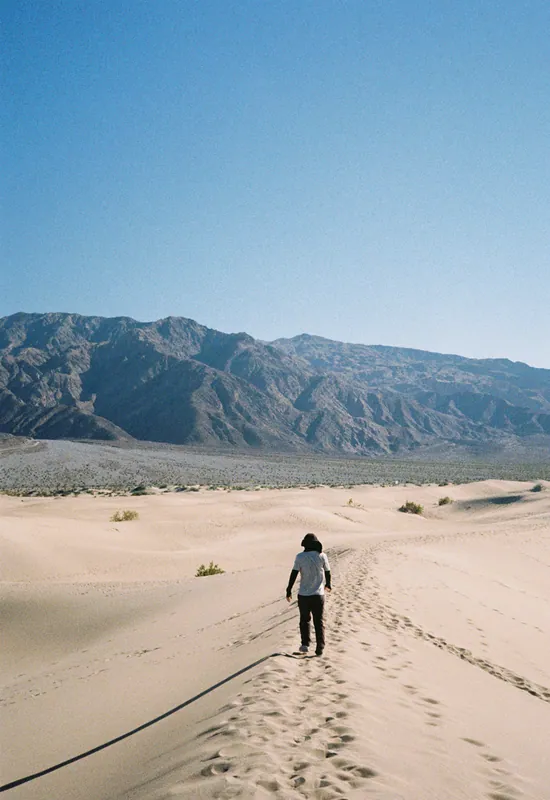
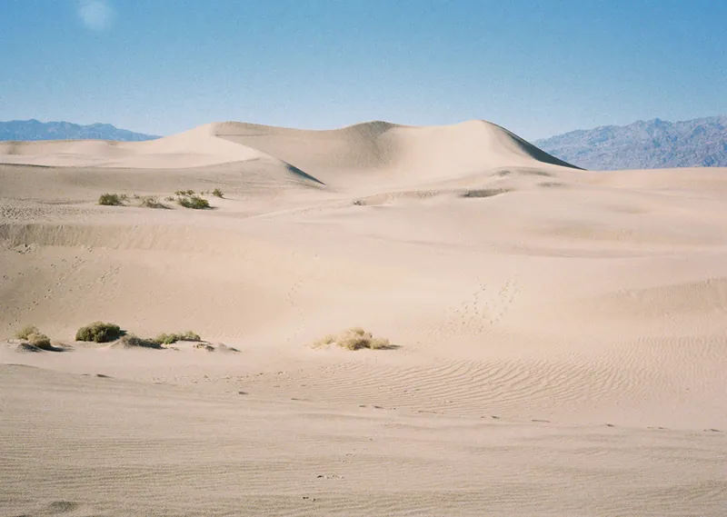
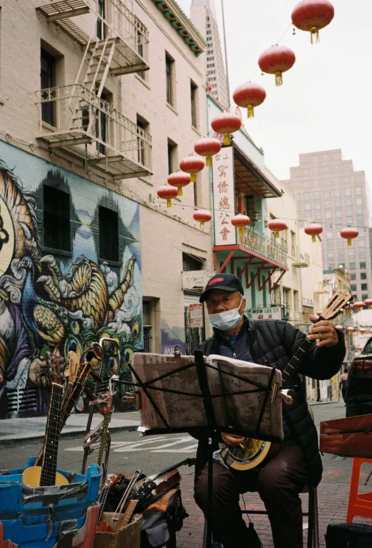
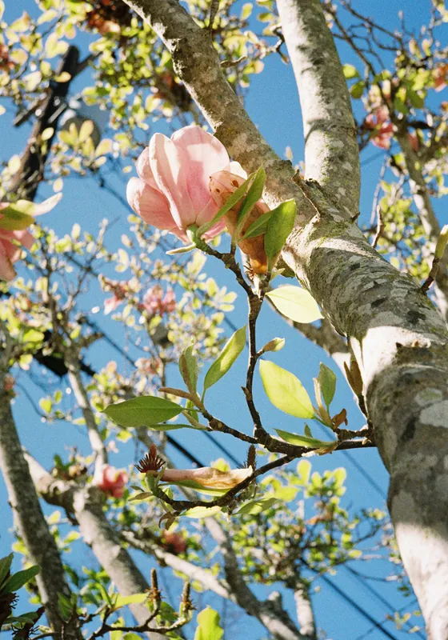
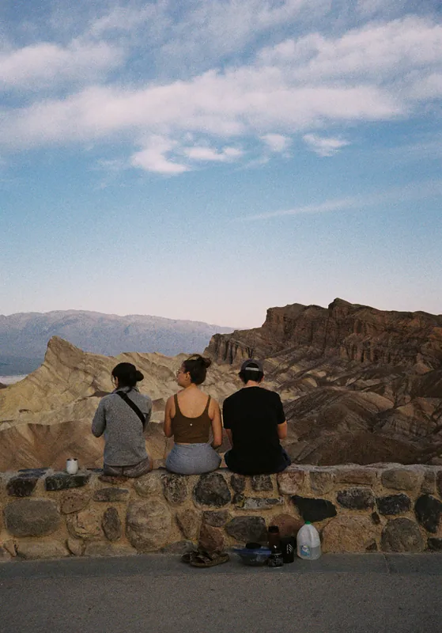

04
Roll 679Chinatown to the Dunes · 唐人街到沙丘
A
B
C
D
E
色彩分析COLOR
上：色相 × 饱和度，往外越浓下：红绿蓝三通道，左暗右亮
色
Color Analyser色彩分析
这一卷的颜色最集中在 橙（10°–50°），这一段占了全部有色像素的 44%。平均饱和度 0.25，平均明度 0.61。
最浓的一格是 679·05L，饱和度 0.49。在看片台里打开任意一格，点「分析」能看那一格自己的直方图。
移到色轮上看是哪个颜色
这一卷走得最远。前半在城里：花市的剑兰扎成捆，红的一端朝上，举过人群；笼子里探出一只狗；灯笼在街的上方连成一条线。
后半突然进了沙漠。沙上的纹路每天被风重画一次，走上去的脚印撑不过一个下午。
有一张里，一个人在很远的地方往上走。不放一个人进去，没人能看出这些沙有多高——尺度这种东西，得靠另一个人来说明。


风每天把沙丘重写一遍，从不留底稿。卷 679



本卷共 54 帧版面选用 11 张，整卷见上方联系表。半格18×24，旧金山 · 死亡谷。